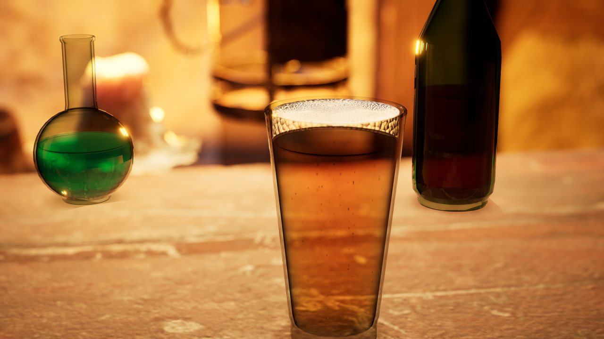

Unreal Engine 5.8 plugin · Documentation
Liquid Props
Liquid inside bottles, glasses and flasks. The liquid keeps its volume when the container moves or tilts, sloshes and settles, builds a foam head that collapses over time, releases bubble chains, wets the wall and is seen through physically based glass. C++ source is included.
- UE 5.8 · Win64
- C++ source
- 6 presets
- 7 container shapes
- 3 example maps

Overview
Liquid Props is a runtime actor, ALiquidPropActor, that builds the container, the liquid volume, the glass, the foam head and the bubbles procedurally. Presets are Blueprints at real-world size, so you can drop them into a level and play.
Where it fits
- Props the player picks up: first-person, immersive-sim and horror games. A carried bottle sloshes, settles when put down and keeps its volume when tilted.
- Drinking and potions as gameplay: bind the fill to a health or mana value, call
ChangeAmountwhen the player drinks, react toOnEmptied. - Bar, tavern, kitchen and cooking sims: pour with
ChangeAmount; beer keeps a head, cola foams up when shaken and the head collapses on its own. - Alchemy and crafting: change
LiquidColorandInnerGlowas ingredients are mixed. - Set dressing: shelves of bottles at real scale. A settled container sleeps and costs nothing per frame.
- Cinematics: Movie Render Queue close-ups with refraction, absorption, foam and bubbles.
Install
- Install the plugin from Fab into the engine, or copy the
LiquidPropsfolder toYourProject/Plugins/LiquidProps. - Enable Liquid Props in Edit → Plugins and restart the editor. Procedural Mesh Component is enabled automatically.
- In the Content Browser, turn on Settings → Show Plugin Content.
The plugin does not change your project's game mode or rendering settings, and writes no files.
Five-minute tour
- Open
/LiquidProps/Maps/L_BeverageLaband press Play. Six presets stand on a lit counter. - Controls in the example maps: 1–9 / Tab select, Space preview motion, K slosh, F shake (foam), E / Q drink / pour, H knock, ↑ ↓ fill, ← → tilt, R reset, A D orbit, W S zoom.
/LiquidProps/Maps/L_ContainerGalleryshows the container shapes;/LiquidProps/Maps/L_LiquidLabshows three fill levels and the preview motion loop.- Drag
Blueprints/Drinks/BP_Beerinto your level. Change Fill Amount and Liquid Recipe in Details; the recipe applies immediately and keeps your fill level and container size.
The example maps use their own game mode through World Settings → GameMode Override.
Presets
All Blueprints are real-world size. Dimensions are the inner radius and height in centimetres.
| Blueprint | Shape | Radius × height | Volume |
|---|---|---|---|
| BP_Wine | Long-neck bottle | 3.6 × 29.5 | ~740 ml |
| BP_Cola | Shoulder bottle | 3.3 × 20 | ~490 ml |
| BP_Beer | Tapered pint | 4.3 × 14.5 | ~570 ml |
| BP_SparklingWater | Highball | 3.1 × 13 | ~390 ml |
| BP_StillWater | Tumbler | 4.0 × 9 | ~305 ml |
| BP_Potion | Round flask | 4.5 × 15.3 | ~410 ml |
Blueprints/Shapes contains the container shapes with neutral liquids. The Inner Volume Milliliters diagnostic shows the volume of any container. Recipes: Wine, Cola, Sparkling Water, Still Water, Beer, Potion, Custom. A recipe changes only the liquid: colour, absorption, foam, bubbles and motion character.
Add liquid to your own prop
Option A: use the built-in glass
Add a LiquidPropActor Blueprint or a preset as a child of your prop, or add the Liquid Container component to your Actor Blueprint and choose a preset as its Child Actor Class. Use Get Liquid Container to reach the liquid from Blueprint.
Option B: your own bottle mesh
- Turn off Show Glass on the liquid.
- Set Container Shape to the closest built-in shape, or to Custom and enter Custom Profile points: X is height 0..1 from the bottom, Y is radius 0..1 of Radius; at least two points with increasing X.
- Set Radius (widest inner radius) and Height (inner height) in centimetres. The actor origin is the centre of the inner volume, +Z up.
- Attach the liquid to your mesh so the profile sits inside the glass.
Gameplay recipes
| Goal | Blueprint |
|---|---|
| Drink a sip | ChangeAmount(-50, 0.6) (millilitres, seconds) |
| Pour in | ChangeAmount(+200, 1.5); beer and cola foam up while pouring |
| Health potion | Set Fill from the health ratio, or SetAmountMilliliters |
| Shake the bottle | Agitate(1) on your shake input |
| Bottle hits the table | Impact(HitNormal, Strength) from the prop's OnHit |
| Bottle is empty | Bind to OnEmptied |
Blueprint API
| Function | What it does |
|---|---|
| Rebuild | Rebuilds geometry after changing size, shape or segments at runtime |
| Kick (Impulse) | Adds a slosh impulse |
| Agitate (Strength) | Adds foam as if the drink was shaken or poured |
| Change Amount (Milliliters, Seconds) | Drinks or pours over time; fires On Emptied / On Filled |
| Set / Get Amount Milliliters | Reads or sets the amount in millilitres |
| Impact (Direction, Strength) | Slosh and foam from a hit |
| Reset Simulation | Stops all motion and clears foam and bubbles |
| Apply Liquid Recipe | Applies the selected recipe |
| Get Liquid Container | (Liquid Container component) returns the liquid actor |
Fill Amount can be changed at any time; the liquid wakes up and re-solves its surface.
Key parameters
- 01 Liquid: Fill Amount, Liquid Color (colour after one radius of depth), Absorption, Turbidity, Roughness, Inner Glow, Meniscus Rise.
- 02 Motion: Acceleration and Rotation Response, Physical Frequency (on by default: the first sloshing mode of the real container) with Frequency Multiplier, Damping, Viscosity, Max Slope.
- 03 Container: Container Shape, Radius, Height, Custom Profile, Segments.
- 04 Glass: Show Glass, Glass Thickness, Glass Base Thickness, Glass Tint, Glass Roughness, Glass Refraction, Contact Shadow Strength.
- 05 Foam: Foam Amount, Start Foam (freshly poured), Foam Thickness, Foam Generation, Carbonation Foam Rate (continuous head, e.g. beer), Foam Half Life, Foam Bubble Scale, Foam Color.
- 06 Bubbles: Bubble Amount, Bubble Rise Speed, Bubble Radius (at birth; bubbles grow while rising), Nucleation Sites.
- 08 Preview (advanced): Animate (preview motion loop in Play), Pause When Offscreen.
Wall film and drops
Place a LiquidWallWetness actor and set Container, or call Initialize with your liquid in BeginPlay. Film Amount controls the wetted film, Condensation Amount the drops, Wine Legs Strength the film that clings after the liquid recedes.
Rendering notes
- Glass and liquids use the Thin Translucent shading model with refraction; the liquid's colour comes from light absorbed along the path through it.
- The foam head uses the Subsurface shading model, so a head lit from behind or above stays light on the side facing the camera.
- Reflections come from your scene (Lumen, reflection captures, sky light). For the best glass, enable High Quality Translucency Reflections in your project. The plugin recommends it but does not change project settings.
- A liquid behind another translucent object follows normal translucency sorting. Each container orders its own glass and liquid internally.
- The contact shadow needs a surface that blocks the Visibility trace channel.
Performance
- A settled container sleeps: no mesh rebuilds and no material updates. Motion, Fill changes, Kick or Agitate wake it.
- Carbonated drinks keep updating bubbles while on screen. With Pause When Offscreen (on by default) they stop when not rendered. Turn it off for Movie Render Queue renders.
- Geometry is rebuilt on the CPU while a container moves; plan for a handful of moving containers at a time and many resting ones.
Limitations
- Containers are surfaces of revolution (built-in shapes or a custom profile). Arbitrary meshes are not analysed.
- Closed volume: no pouring out, spills, splashes or fluid simulation. The liquid state is not replicated over the network.
- Tested on Unreal Engine 5.8.2, Windows (Win64), DX12 SM6.
Changelog
1.0.0
Real-world-scale presets with Beer and Potion; round flask and custom profiles; physically based glass with refraction and a thick base; liquid absorption along the light path; meniscus; foam head with a side band against the glass, wall ring and lace break-up; bubble chains from nucleation sites; contact shadow; sleep at rest; example maps; recipes apply in the editor on change.
Support
Questions, bug reports and feature requests are welcome: message me on LinkedIn.
For a bug report, include the engine version, the preset or settings you used and, if possible, a short video or screenshot.